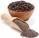

Bacon |
Queijo |
|
|
 Pimenta do Reino |
Macarrão de sua escolha (espaguete, fusili,etc.) |
Creme de leite se quiser dar um toque diferente. |
|
|
|
|
|
|
Coloque o bacon, ainda quente, sobre o macarrão e sirva. |
 Ovo
Ovo Sal
Sal Frite bem o bacon, até ficar
crocante (pode-se adicionar salame picado).
Frite bem o bacon, até ficar
crocante (pode-se adicionar salame picado). Coloque o macarrão para cozinhar
em água e sal.
Coloque o macarrão para cozinhar
em água e sal. No refratário onde será servido
o macarrão, bata bem os ovos com um garfo.
No refratário onde será servido
o macarrão, bata bem os ovos com um garfo. Tempere com sal e pimenta a
gosto, e junte o queijo ralado, também a gosto.
Tempere com sal e pimenta a
gosto, e junte o queijo ralado, também a gosto. Quando o macarrão estiver
pronto, escorra e coloque (bem quente) sobre a mistura de ovos.
Quando o macarrão estiver
pronto, escorra e coloque (bem quente) sobre a mistura de ovos. O calor da massa cozinha os
ovos.
O calor da massa cozinha os
ovos.